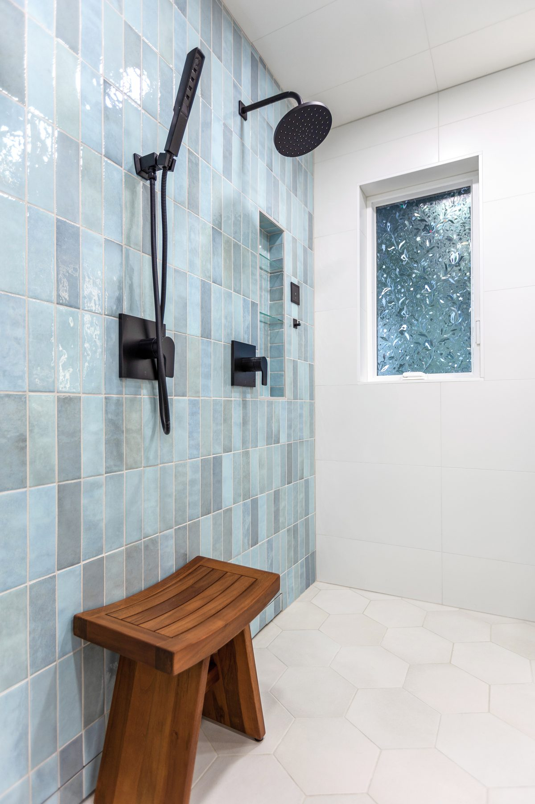
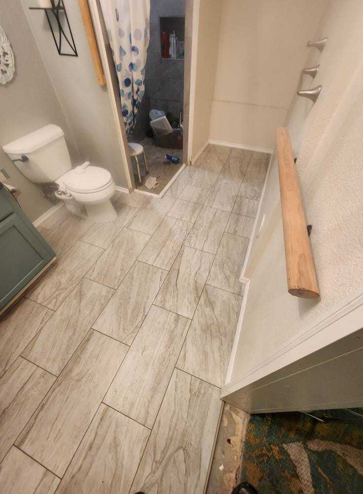
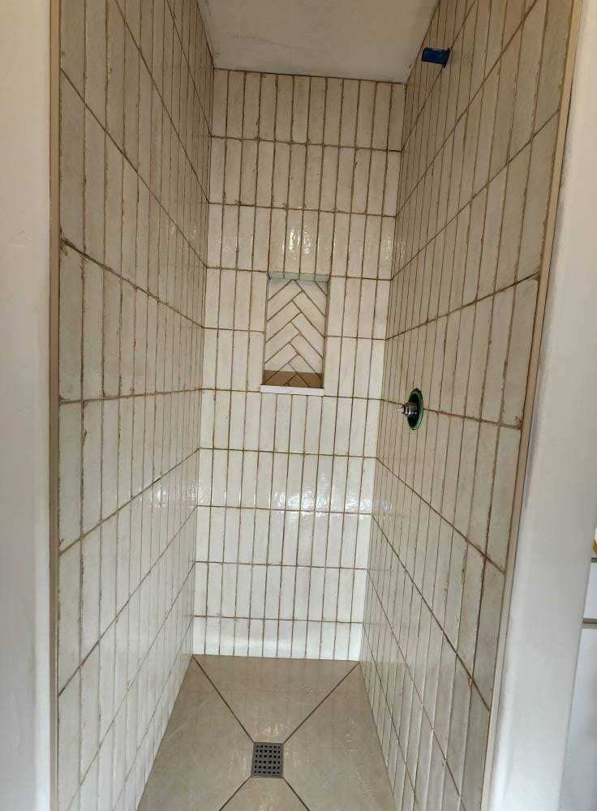
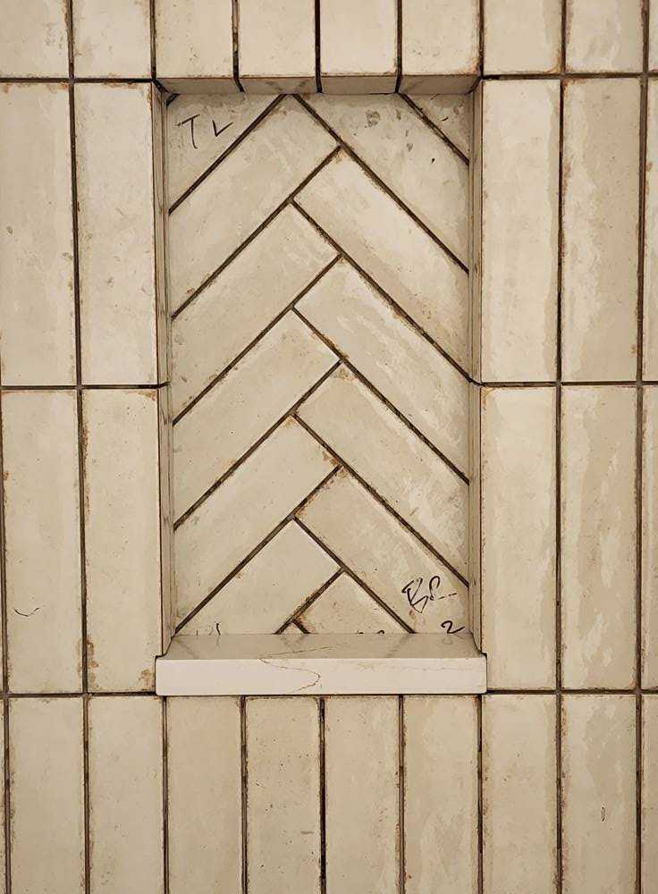

Custom walk-in showers — frameless glass, bench seating, niche storage, and premium tile — built for Hayden homes.
Walk-in showers have replaced the old tub-shower combo as the centerpiece of most modern bathroom remodels. They look better, they're easier to use as you get older, and they're a strong resale upgrade. DCB Construction LLC builds custom walk-in showers for Hayden homeowners — frameless glass, low-curb or curbless entries, custom tile work, built-in benches, niche storage, and waterproof pan systems that actually last.
We work directly with you on the design — pan size and slope, tile selection, glass configuration, fixture choice — then we build it from the studs out. The mud-set pan and waterproofing layer are where most shower installations fail; we don't cut corners on either.
A look at recent walk-in showers work from DCB Construction in the Hayden region.




Hayden splits into two fairly distinct kinds of work for us. There are the established homes through the middle of town, many of them mid-century, where a walk-in shower is a straight conversion in a bathroom of ordinary size. And there are the larger and newer properties, including those out toward Hayden Lake, where the master bath has enough floor area to do something considerably more ambitious.
When there is room, the requests change. A shower wide enough for two heads, a full-length bench instead of a corner seat, a curbless entry with a linear drain running the width of the opening, large-format porcelain with as few grout lines as possible. All of those are achievable, and all of them are easier to get right when the space is designed as a whole rather than squeezed into an existing alcove.
A linear drain is worth planning early in particular. It lets the shower floor slope in one direction instead of four, which is what makes large-format tile work on a shower floor at all, and it is what makes a flush curbless entry read as intentional rather than improvised. It also has to be positioned relative to the joists before any framing happens, so it is a design decision rather than a finish decision.
Hayden parcels fall under either city or Kootenai County jurisdiction depending on where the property sits, so we confirm which applies before filing anything. Hayden is also where we are asked most often to put electric floor heat under the tile while the floor is already open — see in-floor heating for how that goes in.
Looking for other work in Hayden? See: kitchen remodeling in Hayden, bathroom remodeling in Hayden, tile installation in Hayden, or visit our Hayden area page.
The range is $7,000 to $20,000, and Hayden jobs sit higher in it more often than not. That is a function of size rather than location: the larger master baths we work in here tend to call for a bigger shower, a second head, a full bench, curbless entry with a linear drain, or large-format tile, and each of those adds. A conventional 36x60 walk-in in an established Hayden home prices the same as it would anywhere else.
Yes. Hayden parcels fall under city or Kootenai County jurisdiction depending on where the property sits, so the first thing we do is confirm which one applies to your address, then file on your behalf. Installs that relocate plumbing or alter structure typically require a permit and inspection.
Yes, and it is a common request in the larger Hayden bathrooms. A linear drain lets the floor fall in a single direction, which is the only practical way to use large-format tile on a shower floor without cutting it into small pieces. The drain position has to be worked out against the joists before framing, and the pan has to be recessed into the floor structure for the entry to sit truly flush, so it needs deciding at the design stage rather than partway through.
Yes, and if the floor is already coming up it is by far the cheapest time to do it. Electric radiant goes down as a cable or mat set into an uncoupling membrane underneath the tile, so it has to be installed with the tile rather than added afterwards. Retrofitting later means pulling the finished floor. See our in-floor heating page for how the system is built up.